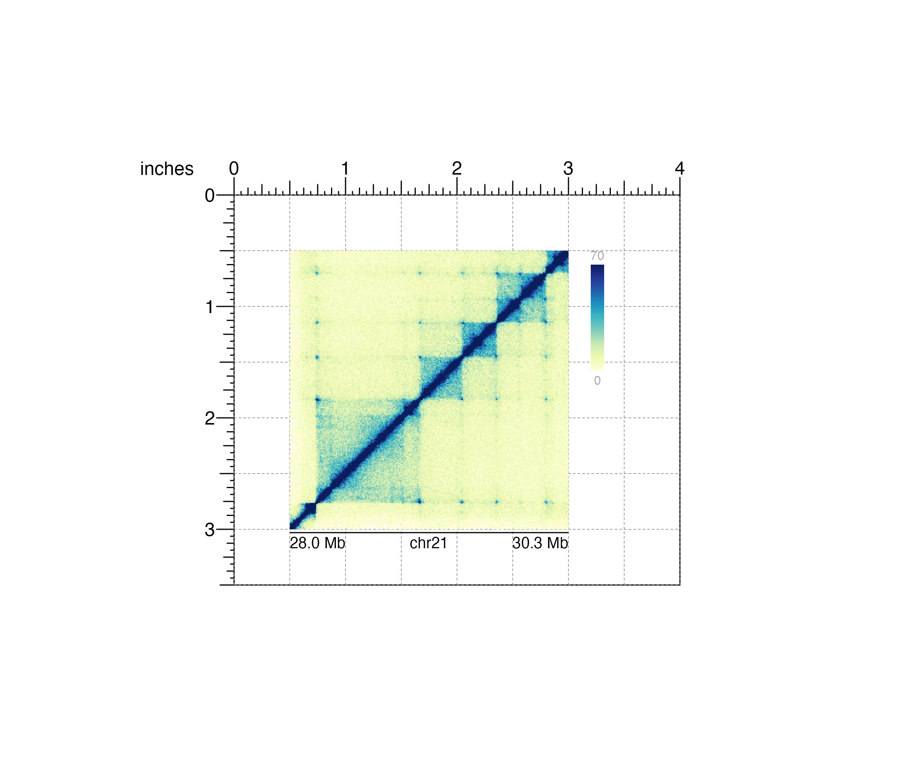

R/bbAnnoHeatmapLegend.R
bbAnnoHeatmapLegend.RdAdd a color scale legend for heatmap-style plots
bbAnnoHeatmapLegend( plot, orientation = "v", fontsize = 8, fontcolor = "dark grey", scientific = FALSE, digits = 0, ticks = FALSE, breaks = NULL, border = FALSE, x, y, width, height, just = c("left", "top"), default.units = "inches", params = NULL, ... )
| plot | Heatmap-style plot object to add heatmap legend for. |
|---|---|
| orientation | A string specifying legend orientation.
Default value is
|
| fontsize | A numeric specifying text fontsize in points.
Default value is |
| fontcolor | Character value specfying text fontcolor.
Default value is |
| scientific | Logical value specifying if numeric color value labels
should be encoded in scientific format.
Default value is |
| digits | Numeric specifying how many digits to include after decimal
points of numeric color value labels. Default value is |
| ticks | Logical value specifying if tick marks on the heatmap
colorbar should be visible. Default value is |
| breaks | A numeric vector specifying tick breaks.
Default value is |
| border | Logical value indicating whether to add a border around
heatmap legend. Default value is |
| x | A numeric or unit object specifying x-location of legend. |
| y | A numeric, unit object, or character containing a "b" combined with a numeric value specifying y-location of legend. The character value will place the legend y relative to the bottom of the most recently plotted BentoBox plot according to the units of the BentoBox page. |
| width | A numeric or unit object specifying width of legend. |
| height | A numeric or unit object specifying height of legend. |
| just | Justification of heatmap legend relative to
its (x, y) location. If there are two values, the first value specifies
horizontal justification and the second value specifies vertical
justification. Possible string values are: |
| default.units | A string indicating the default units to use if
|
| params | An optional bbParams object containing relevant function parameters. |
| ... | Additional grid graphical parameters. See gpar. |
Returns a bb_heatmapLegend object with relevant
color value, placement, and grob information.
## Load Hi-C data library(BentoBoxData) data("IMR90_HiC_10kb") ## Create BentoBox page bbPageCreate(width = 4, height = 3.5, default.units = "inches")## Plot and place a square Hi-C plot hicPlot <- bbPlotHicSquare( data = IMR90_HiC_10kb, resolution = 10000, zrange = c(0, 70), chrom = "chr21", chromstart = 28000000, chromend = 30300000, assembly = "hg19", x = 0.5, y = 0.5, width = 2.5, height = 2.5, just = c("left", "top"), default.units = "inches" )#>#>## Add heatmap legend bbAnnoHeatmapLegend( plot = hicPlot, x = 3.2, y = 0.5, width = 0.12, height = 1.2, just = c("left", "top"), default.units = "inches" )#>## Annotate genome label bbAnnoGenomeLabel( plot = hicPlot, x = 0.5, y = 3.03, scale = "Mb", just = c("left", "top") )#>